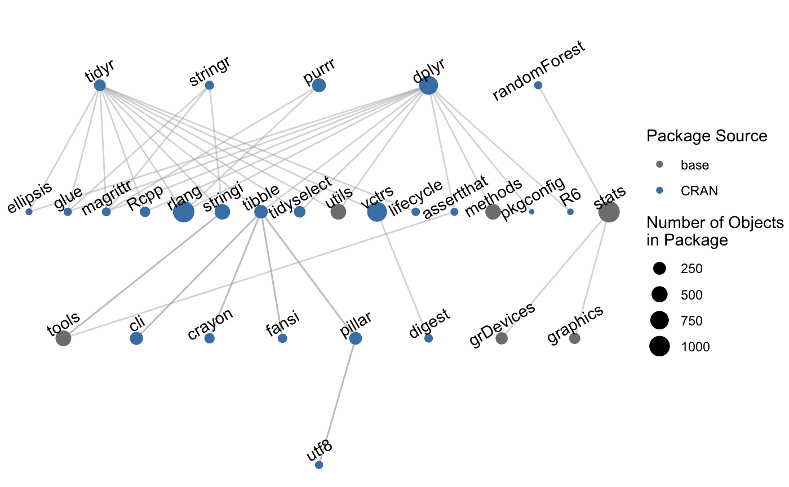

The goal of manager is to provide users with tools to use an adaptive computational reproducibility in their data projects. Adaptive computational reproducibility uses a two-step approach:
This is accomplished using package inventories.
You can install the development version from GitHub with:
We can first take a package inventory for a given set of packages, and visualize the dependency tree implicit when calling that set of packages.
library(manager)
project_inventory <- take_inventory(packages = c("tidyr", "stringr",
"purrr", "dplyr",
"randomForest"))
plot_inventory(project_inventory)
The set of packages at the top of the graphic represent “explicit” package dependencies, which are the packages we want to keep track of. All subsequent layers are “implicit” package dependencies, which arise from calling the set of explicit dependencies.
We can also store these inventories:
Taking and storing an inventory allows for:
Suppose a colleague sends me their inventory of the same set of packages so we can identify differences. I can load that as “userB_inventory” using the readRDS() function and compare the two:
ab_compare <- compare_inventory(inventory1 = project_inventory,
inventory2 = userB_inventory,
summary_file = "data/ab_compare.txt")We can then investigate identified differences between the two inventories using the object ab_compare and the summary text file generated at the summary_file filepath. The summary is printed in the console if no filepath is provided.
The $table element provides a summary table of changed objects and descriptive characteristics of the differences between objects. There is one row for every object which differs between the two inventories.
head(ab_compare$table)
#> # A tibble: 6 x 6
#> package_name object_name object_presence object_changes obj_same params_same
#> <chr> <chr> <chr> <chr> <lgl> <lgl>
#> 1 cli is_ansi_tty Object in both … Objects change… FALSE TRUE
#> 2 digest digest Object in both … Objects change… FALSE TRUE
#> 3 dplyr contains Object in both … Both object an… FALSE FALSE
#> 4 dplyr ends_with Object in both … Both object an… FALSE FALSE
#> 5 dplyr enquos Object in both … Objects change… FALSE TRUE
#> 6 dplyr everything Object in both … Both object an… FALSE FALSEThe $objects element contains the same information as $table, but additionally provides more detail, including the deparsed objects for each of the provided inventories for direct comparison. The deparsed objects are found in the function_text_inv1 and function_text_inv2 columns.
head(ab_compare$objects)
#> # A tibble: 6 x 22
#> package_name object_name object_presence object_changes obj_same params_same
#> <chr> <chr> <chr> <chr> <lgl> <lgl>
#> 1 cli is_ansi_tty Object in both… Objects chang… FALSE TRUE
#> 2 digest digest Object in both… Objects chang… FALSE TRUE
#> 3 dplyr contains Object in both… Both object a… FALSE FALSE
#> 4 dplyr ends_with Object in both… Both object a… FALSE FALSE
#> 5 dplyr enquos Object in both… Objects chang… FALSE TRUE
#> 6 dplyr everything Object in both… Both object a… FALSE FALSE
#> # … with 16 more variables: package_source_inv1 <chr>,
#> # package_version_inv1 <chr>, package_gitrepo_inv1 <chr>,
#> # package_gitcommit_inv1 <chr>, function_text_inv1 <list>,
#> # fun_params_inv1 <list>, obj_checksum_inv1 <chr>,
#> # params_checksum_inv1 <chr>, package_source_inv2 <chr>,
#> # package_version_inv2 <chr>, package_gitrepo_inv2 <chr>,
#> # package_gitcommit_inv2 <chr>, function_text_inv2 <list>,
#> # fun_params_inv2 <list>, obj_checksum_inv2 <chr>, params_checksum_inv2 <chr>We can now compare the deparsed text of the function across two inventories:
ab_compare$objects %>%
filter(package_name == "dplyr", object_name == "contains") %>%
pull(function_text_inv1)
#> [[1]]
#> [1] "function (match, ignore.case = TRUE, vars = peek_vars(fn = \"contains\")) "
#> [2] "{"
#> [3] " check_match(match)"
#> [4] " if (ignore.case) {"
#> [5] " vars <- tolower(vars)"
#> [6] " match <- tolower(match)"
#> [7] " }"
#> [8] " flat_map_int(match, grep_vars, vars, fixed = TRUE)"
#> [9] "}"
ab_compare$objects %>%
filter(package_name == "dplyr", object_name == "contains") %>%
pull(function_text_inv2)
#> [[1]]
#> [1] "function (match, ignore.case = TRUE, vars = peek_vars()) "
#> [2] "{"
#> [3] " stopifnot(is_string(match), nchar(match) > 0)"
#> [4] " if (ignore.case) {"
#> [5] " vars <- tolower(vars)"
#> [6] " match <- tolower(match)"
#> [7] " }"
#> [8] " grep_vars(match, vars, fixed = TRUE)"
#> [9] "}"